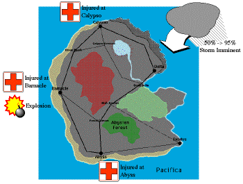

| Map | Initial situation | Developing situation | Sample screen images |
The demonstration can be conducted through a single interface supporting both user roles, or two separate screens can be on display simultaneously. [Gray text in square brackets indicates the variations in the scenario for single or dual screen demonstration modes.] In the latter case the screens can be on totally separate systems if required. The demonstration storyboard has variants depending on whether one or two screens are in use for the two user roles. Asynchronous mixed initiative interaction is most obvious in the scenario when two separate interfaces are in use.
The task assigner and planner may be different people or the two roles may be played by the same person. They examine a number of different COAs by populating an evaluation matrix in which columns represent COAs (plans) and rows represent evaluations (measurements) that can be applied to plans. Once they have developed a plan for a COA task, the evaluation entries in that COA's column are filled in. Some evaluation entries may be links that allow "drill down" to some underlying information and outstanding "issues".
Initial preparations: the TA hits "select evaluations" and turns off everything apart from "minimum duration" and "effectiveness". This shows how critical elements of evaluation may be selected. The TA then sets up the default situation, setting the time limit to 18 hrs. The weather and road situations are left with their default values pending more accurate reports. This shows how environmental data can be recorded for subsequent planning.
COA-1: The TA first explores the option of evacuating the injured from all three cities in clear weather. The COA requirements are passed directly to the planner user. A plan is generated which executes in 12 hrs and has an effectiveness of 77%, which is acceptable. The plan has 3 issues outstanding, which are shown and addressed. The plan is then returned to the TA. This shows how the TA sets up tasks and assumptions, how the two users communicate and how different users can view appropriate evaluations of the plan.
COA-2: The TA then sets up a second COA with the same
evacuation tasks but this time assuming stormy weather, to check for
all eventualities. [The TA's authority screen could be shown and
explained at this point to show that it is possible to develop plans
at an appropriate level.] This new set of COA requirements is passed
to the planner user. The first plan generated takes 21hrs and has an
effectiveness of 61%, both of which are unacceptable. The planner asks
the O-Plan planner for an alternative plan by pressing the "replan"
button. The new plan (COA-2.2) executes in 16 hrs and has an
effectiveness of 75%, both of which are acceptable. The planner user
selects COA-2.2 for return and deletes COA-2.1 and then selects
"return plans". This shows how the planner user can generate
alternative plans for the same COA requirements and select which ones
to return to the TA. At this point, the TA has an acceptable plan for
both clear and stormy conditions.
 Developing situation: the TA is now contacted by the Barnacle field station. Reports are coming in of an explosion at the power station, causing a gas leak. It is thought that this is due to a terrorist bomb, so it seems wise to fix the gas leak and send a bomb squad to defuse any remaining bombs. Meanwhile, the latest weather report indicates that a storm is brewing and has a 95% chance of hitting the island.
COA-2.2.2: to deal with this turn of events, the TA splits COA-2.2 (with its stormy weather assumption) into two sub-options and adds two new tasks to COA-2.2.2, to repair the gas leak at Barnacle and send a bomb squad to Barnacle. This shows how the TA can split COAs into sub-options and add further tasks to existing COAs.
COA-2.2.2 is now passed to the planner user. Since the original COA-2.2 took 16 hrs, the planner user selects "Auth" (automated planner authority setting) and switches action schema choice to "ask user", to have fine control of selection of actions to address the two additional tasks. The planner user is given the option of using fast or slow vehicles for the two additional tasks and chooses fast vehicles (the first option in each case). This demonstrates manual action schema choice by the planner user.
However, this plan takes 22 hrs and has an effectiveness of 63%. The planner user replans and chooses a mixture of fast and slow vehicles for the "repair gas leak" task and a fast vehicle for the "defuse terrorist bomb" task. While better, the new plan takes 19 hrs and has an effectiveness of only 68%.
The TA is getting impatient and tells the planner user "this is taking too long. Just give me the best one so far." The planner user returns COA-2.2.2.2, keeping COA-2.2.2.1 for further back office work. This shows how the planner user can return some plans to the TA and keep others for further planning.
Worsening weather: The TA updates the default situation to reflect the worsening weather report. This shows how environmental information and intelligence can be accommodated into the defaults used for subsequent planning.
COA-3: The TA can see that the plans now being provided will not allow all objectives to be met in the time available if the injured at the three cities are all evacuated. So the TA decides to try to deal with this problem by setting up COA-3 requirements to send medical teams to the three cities to deal with the injured civilians rather than evacuating them, and still sets the objective of repairing the gas leak and defusing potential terrorist bombs at Barnacle.
COA-2.2.2.3: [Note: if only one interface is open for both the TA and planner users, the scenario should skip now to "Continue with COA-3" below, and the development of COA-2.2.2.3 will be done by the planner user after the request to plan for COA-3 is passed from the TA to the planner user. Otherwise the development of COA-2.2.2.3 can be shown in parallel with the TA setting up the requirements for COA-3 above and submitting these for planning.]
Meanwhile, the planner user has continued to explore the possibilities for COA-2.2.2. The plan was improved when the planner user used some slow vehicles in the plan, so it seems likely that this is because the limited number of fast vehicles are being used repeatedly, resulting in a longer (i.e. more linear) plan. The planner user presses "replan" and chooses to use a slow vehicle in the "defuse terrorist bomb" task (rather than the default fast vehicle). Note that a choice is not offered for the "repair gas leak task" - slow vehicles are selected automatically because the other 2 possibilities have already been tried. The planner user was right - the resulting plan executes in 16 hrs and has an effectiveness of 80%. Viewing the plan output (PostScript file - needs PostScript viewer) at level 2 displays that this plan has good parallelism. This shows how the planner user can use experience of previous cases and human judgement to guide O-Plan at choice points in the planning process. The planner user now addresses the issues raised by COA-2.2.2.3.
[If 2 separate interfaces are open for the TA and planner user, the planner user may offer the plan for COA-2.2.2.3 to the TA, saying "I think I've fixed the problem with COA-2.2.2. This shows the asynchronous and collaborative nature of the interactions and in this case shows the initiative being taken by the planner user working in parallel with the TA. The TA presses reload at a convenient time. The TA sees the new plan. "That looks good, thanks for continuing to work that option."]
Continuing with COA-3: "See what you can do with COA-3 as an alternative".
[If using a single interface for both the TA and planner users, the steps described above for the development of 2.2.2.3 should now be done.]
The planner user (still in "ask user" schema selection mode) selects the fast vehicle option for 4 of the tasks, but selects a slow vehicle for the "defuse terrorist bomb" task, since this spreads tasks between the fast and slow vehicles and brings more vehicles into play. The resulting plan executes in 12 hrs and has an effectiveness of 79%. This shows how the TA can explore different tasking level options to address the same initial situation using a different strategy.
The TA now has a choice between COA-2.2.2.3 and COA-3. While COA-3 takes 4 hrs less, it is slightly less effective, and more importantly, it only sends medical teams to the three cities rather than evacuating the injured people. The TA could now examine other details of the two plans, using the plan views and the other elements of evaluation, in order to make an informed choice between the two or plan further.
COA-4: the TA decides to try a combination of the two approaches before proceeding to a briefing. COA-4 is set up with the injured being evacuated from Barnacle (because of the increased risk there) and medical teams being sent to Abyss and Calypso. There is also still the requirement for the gas leak to be repaired at Barnacle and a bomb squad sent. The TA asks the planner user to generate a wide range of options and return the best one. The planner user sets schema choice back to "automatic" and does a number of successive replans - at least 4 are required for an effective demonstration. The replans can be done manually or by using the "automatic replanning" facility offered by the authority screen (set number of replans to 5 and effectiveness to be at least 80%). COA-4 (or COA-4.4 if done by manual replanning) executes in 10 hrs and has an effectiveness of 84%, so this is returned to the TA.
Briefing: the TA clicks on "select COAs" and sets COA-1, COA-2.2.1 and COA-2.2.2.2 to be hidden from display. This leaves as candidates COA-2.2.2.3, COA-3 and COA-4 (or COA-4.4 if manual planning was performed to generate options for COA-4). After viewing the plan, the TA decides to brief as the preferred option on COA-4 (or COA-4.4 if manually generated) because it is the shortest, has the highest effectiveness rating and it has the advantage of evacuating the injured civilians from Barnacle, However, the others still on display are left for explanation and comparison.